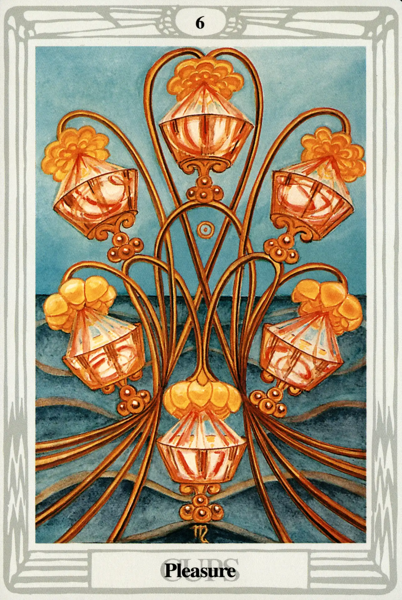

Cups
Six of Cups
Pleasure

(Sol in Scorpio)
10° to 20° Scorpio
November 2 to November 12
Original Title: Lord of Pleasure.
Golden Dawn Model: A hand appears from clouds at the bottom of the card and holds a group of stems of lotuses or water lilies, from which six flowers bend, one over each cup. Water flows from these flowers into the cups as if from a fountain. The cups are not yet fall.
Queen Scale for Tiphareth: Yellow (gold).
The Four Scales for Sol: Orange; Gold Yellow; Rich Amber; Amber, rayed Red.
The Four Scales for Scorpio: Green Blue; Dull Brown; Very dark Brown; Livid indigo Brown.
Formula: 6 (Tiphareth) of Cups (Briah) + Sun in Scorpio = PLEASURE
Balance returns to the suit as the Six of Cups, Pleasure, finds a most delightful home in Tiphareth, the sphere of the Sun. The Four and Five of Cups seem like bad dreams (probably brought on by consuming too much rich food and wine), and we now awaken to the giddy realization that we are the card that is the direct reflection of the Ace of Cups on the Tree of Life. The Sun is outrageously happy to be in Tiphareth and shines with double warmth and pleasantness on the sensuous and fun-loving side of Scorpio. If this is the first card you draw in a tarot reading, you may want to stop right there and quit while you're ahead. This is a terrific card. Crowley agrees:
Pleasure, in the title of this card, must be understood in its highest sense: it implies well-being, harmony of natural forces without effort or strain, ease, satisfaction. Foreign to the idea of the card is the gratification of natural or artificial desires. Yet it does represent emphatically the fulfillment of the sexual Will, as shown by the ruling Sephira, planet, element, and sign.
The sea is alive with broad gentle waves, and the lotuses actually dance, leaving stem trails of perfectly symmetrical patterns and arcs. Water is again pouring into the cups from lotus blossoms, but, as yet, the cups are not filled. Four of the cups are tilted and appear ready to fall, but they are pressed securely against the stems by the generous water pressure from above.